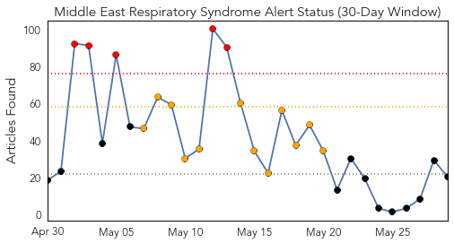
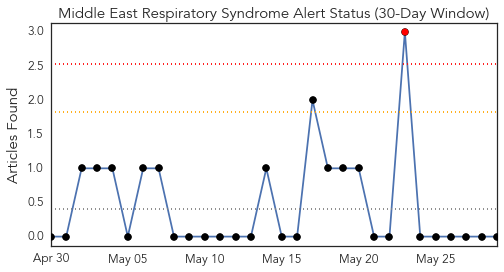
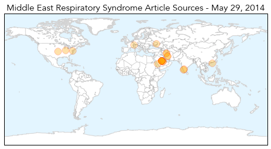
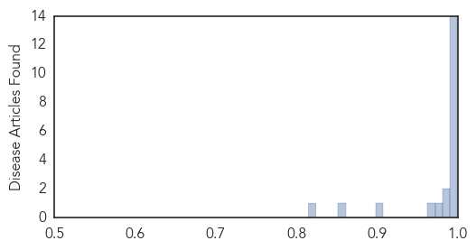

Hepatitis
30-Day Web Trend
3 alerts, 0 warnings

30-Day Twitter Trend
0 alerts, 0 warnings

Article Locations

Article Confidences

Top Articles:
Top Tweets:
-
No tweets found for May 29, 2014
MERS
30-Day Web Trend
5 alerts, 12 warnings

30-Day Twitter Trend
1 alerts, 0 warnings

Article Locations
Article Confidences
Top Articles:
- 1.000
- Public Health Agency of Canada
- 0.999
- MERS misdiagnosis in Illinois man, Mangalorean woman
- 0.999
- Saudi Arabia reports 13 more MERS deaths
- 0.999
- Iran reports first cases of MERS
- 0.998
- MERS virus claims first fatality in Iran
- 0.998
- Illinois MERS Case Turns Out To Be Negative After CDC Investigation; US Still MERS-Free
- 0.998
- CDC Concludes Indiana MERS Patient Did Not Spread Virus to Illinois Business Associate
- 0.998
- CDC: Illinois man didn't have MERS
- 0.997
- US officials backtrack over ‘spread’ of Mers to Illinois man
- 0.997
- Officials take back report of MERS spread in US - Crescent-News
- 0.994
- Indiana MERS patient did not spread virus to Illinois business associate
- 0.993
- Mangalore woman suspected of carrying MERS-Co virus from Saudi tests negative
- 0.992
- Iran announces 1st MERS death
- 0.991
- First MERS death in Iran
- 0.984
- Saudi Arabia reports 3 more MERS cases
- 0.982
- Death toll from MERS reaches 186
- 0.977
- MERS ruled out in Mangalore case
- 0.969
- Iran reports its first 2 cases of MERS virus
- 0.905
- Iran reports 1st MERS casualty
- 0.854
- A New Antiviral Called K22 Has Been Discovered To Fight SARS-Like Virus Epidemics
- 0.815
- Iran confirms first case of MERS
Top Tweets:
-
No tweets found for May 29, 2014